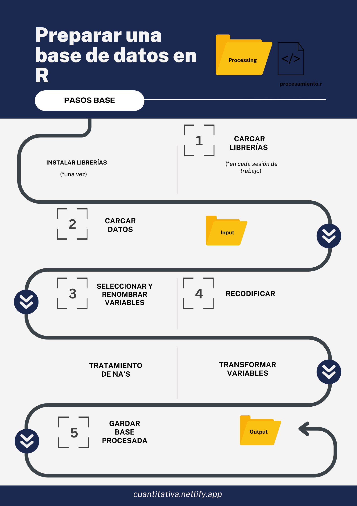
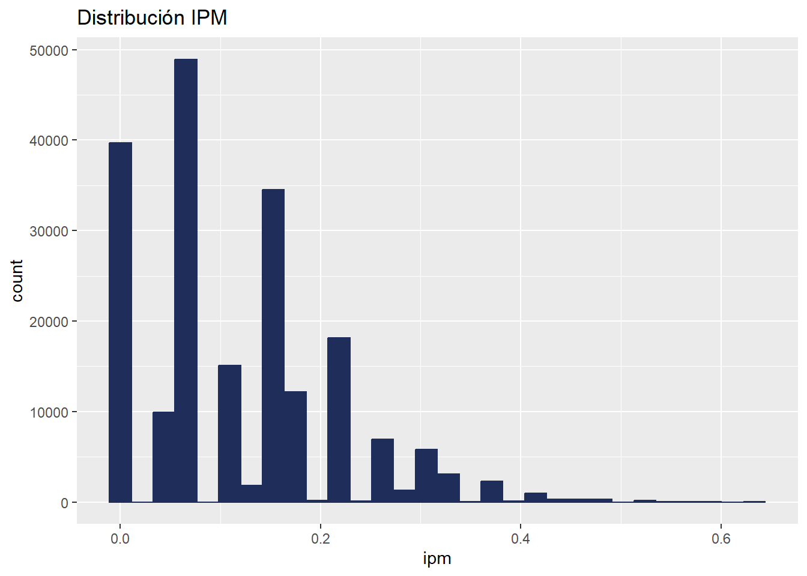
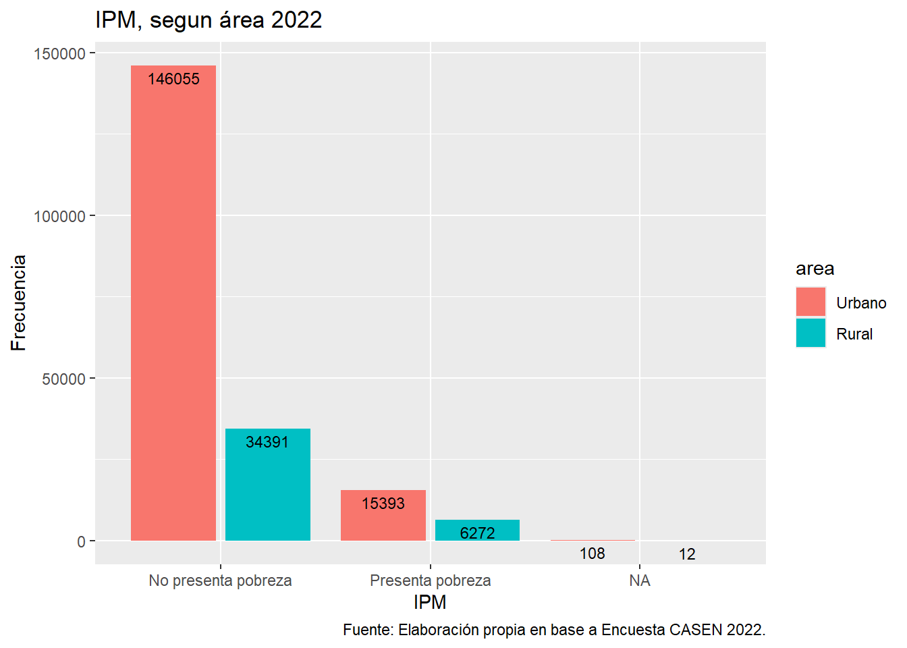

# Cargamos las librerías
pacman::p_load(tidyverse, #colección de paquetes, de la cual utilizaremos dplyr y haven
haven, # cargar y exportar bases de datos en formatos .sav
dplyr) # para manipular datos
# Importamos los datos
casen <- read_sav("../assignment/input/casen.sav")Construcción de índices
Sesión del lunes, 3 de noviembre de 2025
Presentación
Objetivo de la práctica
El objetivo de esta guía práctica es recordar algunos procedimientos básicos de la preparación de datos con R, y enfatizar en la recodificación de variables para la trasnformación de índices.
En detalle, aprenderemos:
Procesar una base de datos: CASEN 2022
Recodifcar y trasnformar indicadores según condiciones
Generar el índice de pobreza multidimensionl (IPM)
1. Repaso: recodificación y procesamiento
Niveles de medición: NOIR
Importante
Para recodificar debemos siempre remitir a los niveles de medición de las variables.
Cuando recodifcamos buscamos reducir o agrupar categorías. Aquello es posible considerando los niveles de medición de las variables (NOIR) y sus propiedades (que son acumulativas). De modo que recodificamos variables que sean cuantitativas a cualitativas, no al revés.
- N: variables nominales. Propiedad (1): clasifican
- O: variables ordinales. Propiedad (2): clasifican y ordenan
- I: variables intervalares. Propiedad (3): clasifican, ordenan y expresan magnitudes
- R: variables de razón. Propiedad (4): clasifican, ordenan, expresan magnitudes y permiten operar sus categorías (aditividad)
Pasos procesamiento

3. Índice de Pobreza Multidimensional (IPM)
En la base de datos CASEN pueden encontrar las variables agregadas del módulo PM que cotneien las variables recodificadas para calcular el índice de Pobreza Multidimensional (IPM), todas con el sufijo hh_d_ .
Con dichas variables, calcularemos el índice completo.
Seleccionar
Como la base de datos sigue siendo la misma, solo seleccionaremos las variables en un nuevo objeto de nombre ipm:
# Usando los datos del objeto casen, crearemos el objeto ipm, al cual le asociaremos el siguiente procedimiento:
ipm <- casen %>% select(
# Educación
hh_d_asis,
hh_d_rez,
hh_d_esc,
# Salud
hh_d_mal,
hh_d_acc,
hh_d_prevs,
# Trabajo y Seguridad Social
hh_d_act,
hh_d_cot,
hh_d_jub,
# Vivienda y Entorno
hh_d_habitab,
hh_d_servbas,
hh_d_entorno,
# Redes y Cohesión Social
hh_d_appart,
hh_d_tsocial,
hh_d_seg,
area,
region)Dimensiones
Ahora, calculamos las dimensiones
# Usando los datos del objeto ipm, sobreescribimos el siguiente procedimiento:
ipm <- ipm %>%
# mutaremos/crearemos 5 nuevas variables correspondientes a las dimensiones
mutate(
# la variable educacion corresponderá al promedio por fila de las 3 varianles seleccionadas:
educacion = rowMeans(across(c(hh_d_asis, hh_d_rez, hh_d_esc)), na.rm = TRUE),
# la variable salud corresponderá al promedio por fila de las 3 varianles seleccionadas:
salud = rowMeans(across(c(hh_d_mal,hh_d_acc, hh_d_prevs)), na.rm = TRUE),
# la variable trabajo corresponderá al promedio por fila de las 3 varianles seleccionadas:
trabajo = rowMeans(across(c(hh_d_act, hh_d_cot, hh_d_jub)), na.rm = TRUE),
# la variable vivienda corresponderá al promedio por fila de las 3 varianles seleccionadas:
vivienda = rowMeans(across(c(hh_d_habitab,hh_d_servbas,hh_d_entorno)), na.rm = TRUE),
# la variable redes_cohesion corresponderá al promedio por fila de las 3 varianles seleccionadas:
redes_cohesion = rowMeans(across(c(hh_d_appart, hh_d_tsocial, hh_d_seg)), na.rm = TRUE))Índice
Ahora, calculamos el índice con su ponderación:
# Usando los datos del objeto ipm, sobreescribimos el siguiente procedimiento:
ipm <- ipm %>% mutate(
# creamos la nueva variable:
ipm = (educacion*0.225 + # multplicamos por su peso
salud*0.225 + # multplicamos por su peso
trabajo*0.225 + # multiplicamos por su peso
vivienda*0.225 + # multiplicamos por su peso
redes_cohesion*0.10)/1) # multiplicamos por su pesolibrary(ggplot2)
ggplot(data.frame(ipm), aes(x = ipm)) +
geom_histogram(color = "#1E2D59", fill = "#1E2D59") +
ggtitle("Distribución IPM")
Interpretación
Por último, establcemos el umbral, para poder interpretar:
# Usando los datos del objeto ipm, sobreescribimos el siguiente procedimiento:
ipm <- ipm %>% mutate(ipm_recod = if_else(
ipm >= 0.25, # si el valor del índice es menor o igual a 0.25
1, # dicha fila tome el valor 1
0, # la fila que no corresponda a la condición tome valor 0
missing = NA_real_) # si no cumple ninguna, que sea un NA
)library(ggplot2)
graf <- ipm %>%
mutate(
ipm_recod = factor(ipm_recod, labels = c("No presenta pobreza", "Presenta pobreza")),
area = factor(area, labels = c("Urbano", "Rural"))
)
ggplot(data = graf,
mapping = aes(x = ipm_recod, fill = area)) + # especificamos datos y mapping
geom_bar(position = "dodge2") + # agregamos geometria y especificamos posicion
labs(title ="IPM, segun área 2022",
x = "IPM",
y = "Frecuencia",
caption = "Fuente: Elaboración propia en base a Encuesta CASEN 2022.") +# agregamos titulo, nombres a los ejes y fuente
geom_text(aes(label = ..count..), stat = "count", colour = "black",
vjust = 1.5, position = position_dodge(.9), size = 3) # agregamos freq de cada barra por grupo
4. Ejercicios
Ejercicio individual
Crear una nueva variable “indep_con_vivienda” usando case_when() y con las siguientes condiciones:
- con la variable o15: trabajadores independientes
- con la variable v13_propia: propia pagada o pagándose
Ejercicio grupal
Reunanse en grupos. Considerando la dimensión de educación del IPM, elija uno de los tres indicadores y transforme una nueva variable correspondiente al indicador. Para ello, deberán descargar desde la página del Observatorio Social, la base de datos de la CASEN 2022 e importar dicha base para seleccionar las variables a utilizar.
Asistencia escolar: Uno de sus integrantes de 4 a 18 años de edad no está asistiendo a un establecimiento educacional y no ha egresado de cuarto medio, o al menos un integrante de 6 a 26 años tiene una condición permanente y/o de larga duración y no asiste a un establecimiento educacional.
Escolaridad: Uno de sus integrantes mayores de 18 años ha alcanzado menos años de escolaridad que los establecidos por ley, de acuerdo a su edad.
Rezago escolar: Uno de sus integrantes de 21 años o menos asiste a educación básica o media y se encuentra retrasado dos años o más.